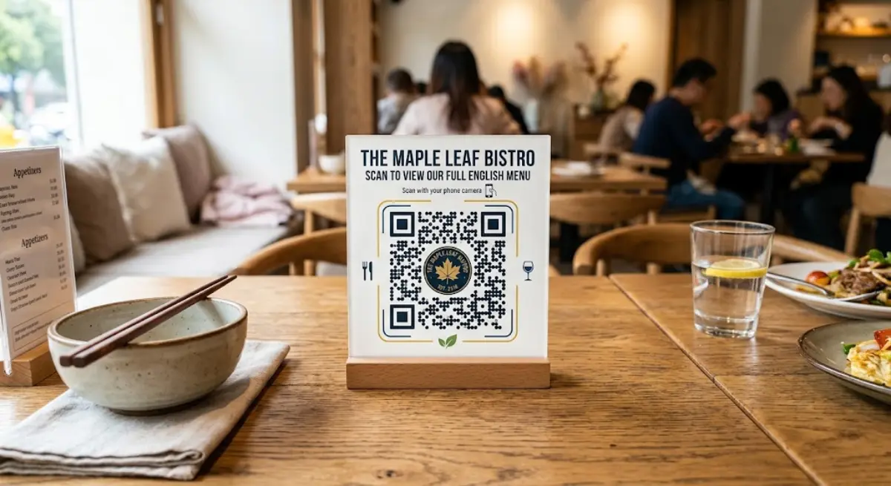
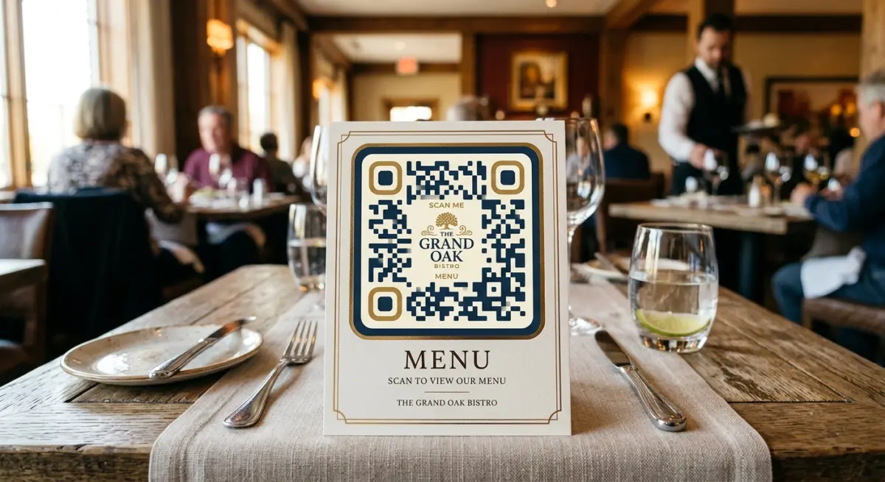

Create Custom QR Codes with Logo (Free & Privacy-First)
A custom QR code generator with logo is a digital tool that embeds central brand icons, custom colors, and Call-to-Action (CTA) frames into Quick Response (QR) matrix barcodes. By utilizing high Reed-Solomon Error Correction (ECC), it preserves 100% scan reliability while increasing brand recognition and scan conversion rates up to 30%.
In today’s mobile-first digital landscape, bridge technology between physical touchpoints and online experiences is no longer optional—it is essential. Quick Response (QR) codes have evolved from simple black-and-white pixelated grids into powerful, visually branded marketing gateways. Whether you are running a retail campaign, managing event ticketing, or directing customers to a digital menu, utilizing a free custom QR code generator with logo allows your brand to maintain visual consistency while safeguarding user privacy.
Adding your brand logo, custom colors, and unique call-to-action (CTA) frames transforms a generic QR code into a recognizable marketing asset. Research shows that branded QR codes can increase scan rates by up to 30% compared to standard black-and-white codes, primarily because custom visual elements build instant trust with users.
In this comprehensive guide, we will explore how custom QR codes work, compare dynamic versus static codes, outline design best practices, and demonstrate how you can instantly create professional branded QR codes directly in your browser using MatrixQR Studio.

Why Your Brand Needs a Privacy-First Custom QR Code Generator with Logo
When users encounter an unbranded, plain QR code in public, security concerns often arise. Cyber threats such as "QRishing" (QR code phishing) have made consumers cautious about scanning random codes. A customized QR code featuring your company’s logo and brand identity immediately signals legitimacy and professionalism.
Key Benefits of Custom Branded QR Codes
- Enhanced Brand Recognition: Incorporating your official logo, brand colors, and iconography ensures that your offline marketing materials (brochures, packaging, banners) remain cohesive with your online brand identity.
- Higher Scan & Conversion Rates: Visually appealing QR codes featuring clear Call-to-Action frames (e.g., "Scan to View Menu") attract significantly higher user interaction.
- Browser-Side Privacy Assurance: Unlike legacy tools that send image files to remote servers, MatrixQR processes your uploaded logos entirely on client-side HTML5 Canvas, ensuring complete data security.
- Improved Trust & Security: A recognizable logo inside the QR code reassures consumers that scanning the code will direct them to an authentic, secure destination.
Static vs. Dynamic QR Codes: Which Should You Choose?
Before generating your code, it is critical to understand the technical difference between Static and Dynamic QR codes. Depending on your business goals, choosing the right type will impact your campaign's long-term flexibility and tracking capabilities.
| Feature | Static QR Codes | Dynamic QR Codes |
|---|---|---|
| URL Editability | Permanent (Cannot be changed after creation) | Fully Editable (Change target destination anytime) |
| Scan Analytics | No tracking (Zero server data logging) | Trackable (Total scans, location, device, time) |
| Data Density & Size | Larger data creates denser, complex codes | Keeps code simple via a lightweight redirection URL |
| Best For | One-time links, personal Wi-Fi, privacy-first vCards | Marketing campaigns, digital menus, product packaging |
| Lifespan | Never expires | Flexible management via digital dashboard |
For most professional and marketing use cases, Dynamic QR Codes are recommended. However, for users demanding absolute privacy without intermediate redirects, Static QR codes compiled locally remain the safest choice. Read our detailed Static vs. Dynamic QR code comparison guide for deeper insights.

Key Best Practices for Designing High-Converting QR Codes
While customizing your QR code with logos and colors is effective, maintaining scannability is paramount according to ISO/IEC 18004 QR Code standards. Follow these battle-tested design rules:
1. Maintain High Color Contrast
Camera sensors scan QR codes by detecting contrast between foreground modules and the background.
- Do: Use dark foreground colors on a light background (e.g., deep navy on crisp white).
- Don't: Avoid light foreground colors on a dark background, or subtle contrast pairs like yellow on white.
2. Safeguard the Quiet Zone
The "Quiet Zone" is the blank margin surrounding the QR code. Always keep a clear margin equal to at least 4 modules wide to prevent scanning delays.
3. Choose Optimal Logo Size and Error Correction (ECC)
When using a custom QR code generator with logo, position the central logo so it occupies no more than 25-30% of the surface area. Always select Error Correction Level H (High - up to 30% recovery) or Q (Quartile - up to 25% recovery) to ensure 100% scan accuracy despite central overlays.
Step-by-Step Guide: How to Create a Custom QR Code with Logo on MatrixQR
Creating a secure, high-resolution QR code takes less than two minutes using MatrixQR. All generation happens locally in your browser DOM without mandatory user registration.
Detailed Workflow:
-
Select Your Data Field:
Navigate to MatrixQR Studio and choose your content type: URL, vCard, Wi-Fi, or Digital Menu link. -
Upload Your Brand Icon:
Click the Logo Upload tab to load your transparent PNG or vector SVG logo. MatrixQR automatically sets Level H Error Correction and renders the image via client-side HTML5 Canvas. -
Incorporate Scenario-Specific Features:
If building QR codes for food and hospitality, consult our step-by-step guide on adding logos to digital restaurant menus or read our technical whitepaper on client-side canvas image sanitization. -
Test and Export Vector Files:
Test the code on multiple smartphone camera apps under varying lighting conditions, then download vector SVG outputs suitable for physical print packaging.
Frequently Asked Questions (FAQ)
Will adding a logo make my QR code hard to scan?
No, provided correct Error Correction Levels are configured. MatrixQR automatically applies Level H Error Correction when a central logo is attached, enabling up to 30% of damaged or covered code matrix data to be accurately recovered by cameras.
Can I track how many people scan my QR code?
Yes. By choosing a Dynamic QR Code on MatrixQR, you gain access to privacy-compliant scan metrics including scan counts, device operating systems, and basic referral regions.
Are my logo and target links safe from server data leaks?
Yes. MatrixQR utilizes client-side Web Content API architecture. Static QR code rendering occurs directly inside your local browser instance without uploading confidential media files to third-party databases.
Start Creating Branded QR Codes Today
A customized QR code bridges physical touchpoints with your digital ecosystem while strengthening brand trust. By abandoning plain black-and-white grids in favor of branded visual elements, you increase user scan rates and elevate campaign conversions.
Ready to upgrade your marketing collateral with vector-grade SVG output and zero data tracking? Generate your free custom code today with the MatrixQR Custom QR Code Generator with Logo.